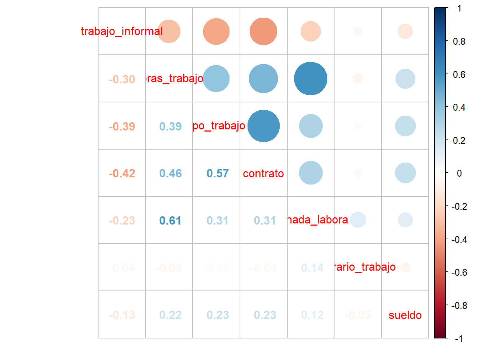
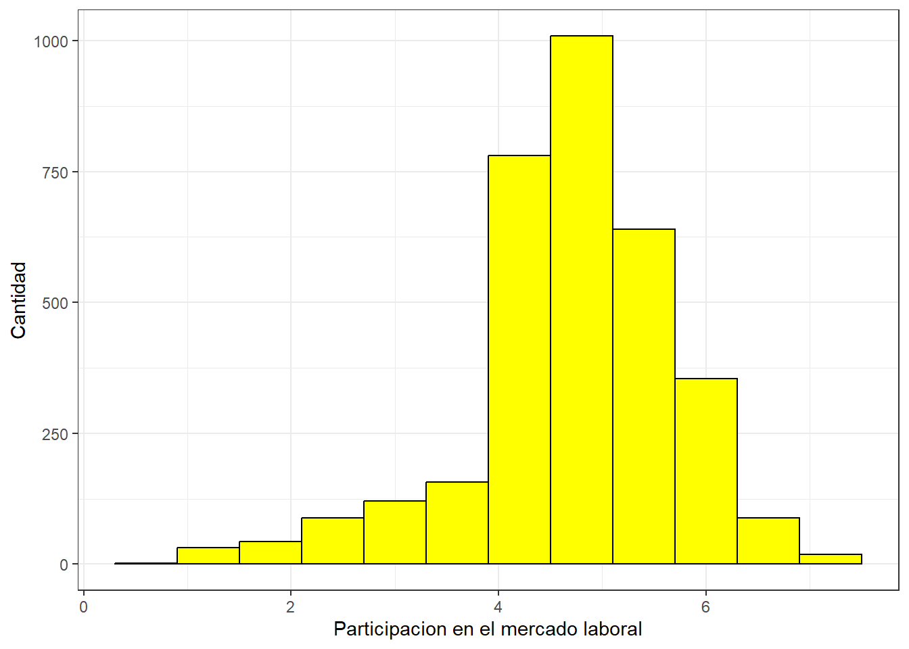
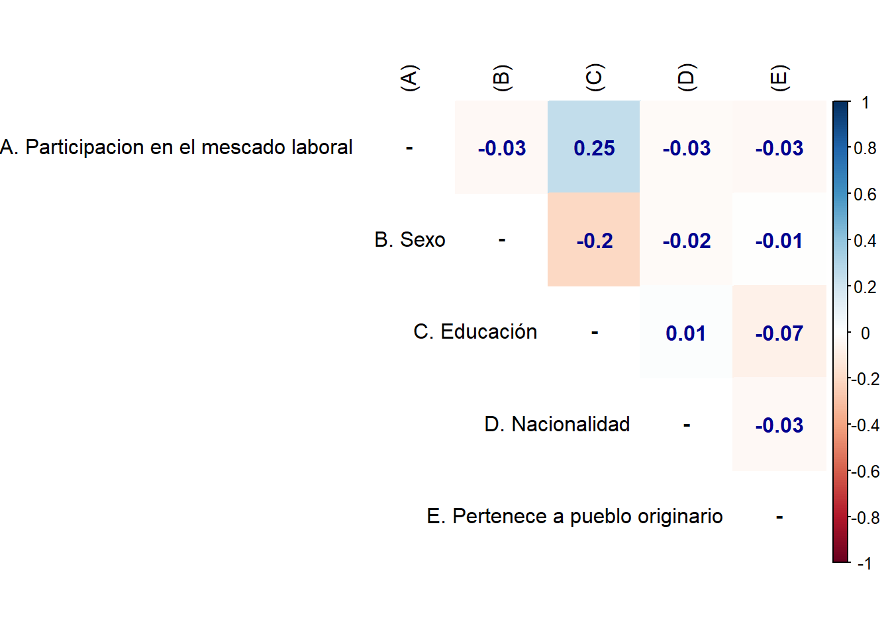

pacman::p_load(sjlabelled, dplyr, stargazer, sjmisc, summarytools, kableExtra, sjPlot, corrplot, sessioninfo, ggplot2)Trabajo
Participación en el mercado laboral
Introducción
La economía de un país es fundamental para su desarrollo y crecimiento. En Chile, la participación laboral es un tema recurrente en discursos políticos y discusiones económicas. Los políticos suelen utilizar indicadores como el índice de desempleo y la tasa de participación laboral para demostrar que tan bien o mal prospera y se encuentra la estabilidad económica del país. Es por esto que resulta de suma importancia analizar y entender los factores que influyen en la participación laboral de las personas en Chile. En este estudio, me enfocare en identificar y analizar los elementos que pueden afectar la participación laboral, desde la educación y la formación laboral hasta las condiciones laborales y la estructura económica del país. Al entender mejor estos factores, podemos desarrollar estrategias más efectivas para fomentar la integración laboral y mejorar las condiciones de trabajo en Chile. (Neffa and De La Garza Toledo 2020)
Para poder adentrarme en el análisis del mercado laboral chileno, es importante primero realizar una contextualización histórica, sobre que sistema económico tenemos en Chile. Desde la década de 1970, en dictadura se impuso el modelo neoliberal en el país. Como nos dice Carrasco “Es un proceso que tiene antecedentes en las ideas del liberalismo económico, donde destaca la figura de Adam Smith y sus teorías sobre el mercado y el libre comercio, el laissez faire, la libertad e interés individual, la necesidad de la propiedad privada, el rol prescindente del Estado en las dinámicas económicas, entre otras que son la base de la economía clásica”. Esto nos ayuda a comprender bajo que ideas se ha desarrollado el mercado laboral chileno.
El neoliberalismo ha traído tanto dificultades como desigualdades bajo un discurso de progreso económico, hay ciertos puntos que nos puedes develar que factores influyen en la participación dentro del mercado laboral, algunos son factores como el género, el nivel educación, las condiciones laborales, etc. Estos algunos de desafíos a los que nos enfrentamos para mejorar, la participación y la calidad del mercado laboral.
Para realizar este análisis estaré trabajando con la Encuesta de Caracterización social (CASEN), del año 2022, la cual es una encuesta hacia los hogares realizado por el Ministerio de Desarrollo Social y Familia. La cual recodifique antes de los resultados que se presentaran en este trabajao, ya que la base de datos es muy pesada, filtre por solo las variables que necesitare trabajar a lo largo de esta investigacion.
Trabajo en Rstudio
A lo largo de esta investigación, he trabajado con cuatro scripts con el objetivo de mantener el orden y para llevar a cabo distintos análisis de las variables. A partir de aquí, presentaré el desarrollo realizado en cada uno de estos scripts, junto con sus resultados, análisis y conclusiones. Todo con el objetivo de realizar un análisis de la participación en el mercado laboral en Chile.
Cargar paquetes:
Cargar base de datos:
load(url("https://github.com/panchamama/Practico-1/raw/main/1.%20input/casen_rec.rdata"))Recodificamos la base de datos por edad entre 15 hasta 65 años, ya que considero este grupo etario como el optimo para participar dentro del mercado laboral.
casen_rec <- casen_rec %>% dplyr:: filter(edad >= 18 & edad <= 65)dim(casen_rec)[1] 127700 14names(casen_rec) [1] "edad" "sexo" "educ"
[4] "trabajo" "trabajo_informal" "busqueda_trabajo"
[7] "horas_trabajo" "tipo_trabajo" "contrato"
[10] "jornada_labora" "horario_trabajo" "sueldo"
[13] "nacionalidad" "pueblo_originario"Vemos los primeros descriptivos que nos ofrece la base datos
sjmisc::descr(casen_rec,
show = c("label","range", "mean", "sd", "NA.prc", "n"))%>%
kable(.,"markdown")| var | label | n | NA.prc | mean | sd | range | |
|---|---|---|---|---|---|---|---|
| 3 | edad | Edad | 127700 | 0.00000 | 41.0188645 | 14.0305535 | 47 (18-65) |
| 10 | sexo | sexo | 127700 | 0.00000 | 1.4683242 | 0.4989976 | 1 (1-2) |
| 4 | educ | educ | 112246 | 12.10180 | 3.1026406 | 0.7505976 | 4 (1-5) |
| 13 | trabajo | trabajo | 127700 | 0.00000 | 1.5927095 | 0.4913317 | 1 (1-2) |
| 14 | trabajo_informal | trabajo_informal | 52011 | 59.27095 | 1.0331276 | 0.1789715 | 1 (1-2) |
| 1 | busqueda_trabajo | busqueda_trabajo | 38955 | 69.49491 | 1.3863432 | 0.4869171 | 1 (1-2) |
| 6 | horas_trabajo | horas_trabajo | 79529 | 37.72200 | 2.7104327 | 0.6019090 | 2 (1-3) |
| 12 | tipo_trabajo | tipo_trabajo | 80407 | 37.03446 | 0.8256060 | 0.3279793 | 1 (0-1) |
| 2 | contrato | contrato | 58586 | 54.12216 | 0.8594374 | 0.3440683 | 1 (0-1) |
| 7 | jornada_labora | jornada_labora | 58803 | 53.95223 | 0.9154210 | 0.2096932 | 1 (0-1) |
| 5 | horario_trabajo | horario_trabajo | 58946 | 53.84025 | 0.8040155 | 0.3910666 | 1 (0-1) |
| 11 | sueldo | sueldo | 57505 | 54.96868 | 1.6330232 | 0.6965349 | 2 (1-3) |
| 8 | nacionalidad | nacionalidad | 127700 | 0.00000 | 1.0666406 | 0.2493995 | 1 (1-2) |
| 9 | pueblo_originario | pueblo_originario | 127700 | 0.00000 | 1.1374236 | 0.3442954 | 1 (1-2) |
Analisis de variables
Lo primero que realizare es una asociación entre algunas variable y cruzadas con la variable de sexo esto para tener una primera visualización de la participación laboral
a) Realizo trabajo formal
sjt.xtab(casen_rec$trabajo, casen_rec$sexo,
show.col.prc=TRUE,
show.summary=FALSE,
encoding = "UTF-8"
)| trabajo | sexo | Total | |
| Mujer | Hombre | ||
| No trabaja | 34900 51.4 % |
17111 28.6 % |
52011 40.7 % |
| Trabaja | 32995 48.6 % |
42694 71.4 % |
75689 59.3 % |
| Total | 67895 100 % |
59805 100 % |
127700 100 % |
Esta primera tabla nos ofrece lo siguiente, la cantidad de personas que realizan trabajo formal, son más hombres que mujeres, siendo los hombres un 71.4%, mientras que las mujeres son el 48.6%. Cuando vemos quienes no hay realizado un trabajo formal vemos que son la mayoría mujeres siendo un 51.4% mientras que los hombres son un 28.6%, esto es un primer acercamiento a las brechas de género que experimenta el mercado laboral.
b) Realizo algun trabajo de manera informal
sjt.xtab(casen_rec$trabajo_informal, casen_rec$sexo,
show.col.prc=TRUE,
show.summary=FALSE,
encoding = "UTF-8"
)| trabajo_informal | sexo | Total | |
| Mujer | Hombre | ||
| No trabaja | 33913 97.2 % |
16375 95.7 % |
50288 96.7 % |
| Trabaja | 987 2.8 % |
736 4.3 % |
1723 3.3 % |
| Total | 34900 100 % |
17111 100 % |
52011 100 % |
Ahora bien, la pregunta iba a si realizo algún trabajo por salario sin necesidad que este fuera formal. Los resultados no son tan demostrativos ya que la mayoría tanto hombres como mujeres no han trabajado de manera informal y nos quedamos con muy pocos casos de quienes si lo han realizado. Sim embargo quienes si lo han hecho son más mujeres siendo 987, mientras que los hombres son 736 personas.
c) Cuantas horas trabajo a la semana
sjt.xtab(casen_rec$horas_trabajo, casen_rec$sexo,
show.col.prc=TRUE,
show.summary=FALSE,
encoding = "UTF-8"
)| horas_trabajo | sexo | Total | |
| Mujer | Hombre | ||
| Inf promedio | 4016 11.3 % |
2210 5 % |
6226 7.8 % |
| Promedio | 6320 17.7 % |
4257 9.7 % |
10577 13.3 % |
| Sup promedio | 25292 71 % |
37434 85.3 % |
62726 78.9 % |
| Total | 35628 100 % |
43901 100 % |
79529 100 % |
En la siguiente tabla se pregunta por la cantidad de horas que ha trabajado una persona. De lo cual se observa lo siguiente: Las horas promedio de trabajo son más mujeres (17.7%) que hombres (9.7%), que lo realizan, sin embargo, cuando analizamos trabajar horas inferiores al promedio y trabajar superiores al promedio, vemos que en el primer punto son más mujeres quienes traban menos horas habituales al promedio, y a su inversa cuando vemos quienes son los que más trabajan sobre el promedio son los hombres. Esto quiere decir que las mujeres trabajen menos, no necesariamente.
d) Razonas por la cual no busco trabajo
sjt.xtab(casen_rec$busqueda_trabajo, casen_rec$sexo,
show.col.prc=TRUE,
show.summary=FALSE,
encoding = "UTF-8"
)| busqueda_trabajo | sexo | Total | |
| Mujer | Hombre | ||
| Otro motivo | 13454 48.4 % |
10451 93.6 % |
23905 61.4 % |
| Razones de cuidado | 14331 51.6 % |
719 6.4 % |
15050 38.6 % |
| Total | 27785 100 % |
11170 100 % |
38955 100 % |
Esta tabla es bien interesante, ya que responden las personas que no trabajan, a porque no han podido o querido buscar un trabajo, dentro de las opciones agrupe todas las que referían al cuidado de algún familiar, niño, etc. y cuidado doméstico, toda cualquier otra razón la agrupe en otro motivo. El resultado de esto se ve en la tabla, de la cual podemos debelar que, si nos fijamos en la opción de razones de cuidado, vemos una amplia diferencia entre hombres y mujeres, donde solo un 6.4% de hombres no buscaron trabajo por razones de cuidado, mientras que las mujeres fueron un 51.6%, observamos una amplía diferencia. Esta tabla nos podría acercar a una interpretación de las tablas anteriores talvez las mujeres trabajan menos horas formales, pero se encuentran realizando otras labores que no siempre se cuentan como trabajo.
e) Sueldo
sjt.xtab(casen_rec$sueldo, casen_rec$sexo,
show.col.prc=TRUE,
show.summary=FALSE,
encoding = "UTF-8"
)| sueldo | sexo | Total | |
| Mujer | Hombre | ||
| Menos del salario minimo |
14994 57 % |
13379 42.9 % |
28373 49.3 % |
| Salario promedio | 8474 32.2 % |
13388 42.9 % |
21862 38 % |
| Salario sobre el promedio |
2826 10.7 % |
4444 14.2 % |
7270 12.6 % |
| Total | 26294 100 % |
31211 100 % |
57505 100 % |
Por último, temeos esta taba sobre el sueldo mensual de una persona, cruzada con la variable sexo. Obteniendo los siguiente: Si vemos las personas que ganan menos del salario mínimo, vemos que son más mujeres quienes se encuentran ahí, es más si vemos el grupo de las mujeres, la mayoría está concentrada en este punto. Mientras que los hombres están más o menos igualmente divididos entre menos del salario mínimo y el salario promedio. Ahora bien, si nos situamos en el salario promedio las mujeres son 32.2% mientras que los hombres son el 42.9% una diferencia del 10%. Y por último cuando vemos quienes ganan sobre el salario mínimo vemos que son más hombre siendo 14.2% y las mujeres un 10.7%.
Esta tabla es muy rica en informacion, sin embargo no podemos afirmar en su totalidad que las mujeres ganan menos que los hombres, ya que analizamos solo una muestra,pero, nos ayuda a plantear otras interrogantes y debelar desigualdades salariales que hay que estudiar.
Correlación entre variables
Ahora limpiamos el area de trabajo para cargar los datos que nos permitiran realizar la correlación.
rm(list = ls()) #limpiar area de trabajo
pacman::p_load(dplyr, # Manipulacion datos
sjmisc, # Descriptivos
sjPlot, # Tablas
sjlabelled, #etiquetas
kableExtra, #Tablas
GGally, # Correlaciones
corrplot) # Correlaciones
options(scipen = 999) # para desactivar notacion cientificaCargamos nuevamente la base de datos y recodificamos por edad entre 15 y 65 años
load(url("https://github.com/panchamama/Practico-1/raw/main/1.%20input/casen_rec.rdata"))
casen_rec <- casen_rec %>% dplyr:: filter(edad >= 18 & edad <= 65)
dim(casen_rec)[1] 127700 14Y ahora recodificamos un par de variables que anteriormente estábamos analizando como categóricas, pero, es necesario transformarlas en numéricas. Esto es realizado con el objetivo de poder realizar la correlación en de estas variables, para posteriormente realizar la escala.
frq(casen_rec$trabajo) # Recodificacion numericax <categorical>
# total N=127700 valid N=127700 mean=1.59 sd=0.49
Value | N | Raw % | Valid % | Cum. %
---------------------------------------------
No trabaja | 52011 | 40.73 | 40.73 | 40.73
Trabaja | 75689 | 59.27 | 59.27 | 100.00
<NA> | 0 | 0.00 | <NA> | <NA>casen_rec$trabajo <- recode(casen_rec$trabajo, "No trabaja" = 0, "Trabaja" = 1)
summary(casen_rec$trabajo) #Confirmacion Min. 1st Qu. Median Mean 3rd Qu. Max.
0.0000 0.0000 1.0000 0.5927 1.0000 1.0000 frq(casen_rec$trabajo_informal) # Recodificacion numericax <categorical>
# total N=127700 valid N=52011 mean=1.03 sd=0.18
Value | N | Raw % | Valid % | Cum. %
---------------------------------------------
No trabaja | 50288 | 39.38 | 96.69 | 96.69
Trabaja | 1723 | 1.35 | 3.31 | 100.00
<NA> | 75689 | 59.27 | <NA> | <NA>casen_rec$trabajo_informal <- recode(casen_rec$trabajo_informal, "No trabaja" = 0, "Trabaja" = 1)
summary(casen_rec$trabajo_informal) #Confirmacion Min. 1st Qu. Median Mean 3rd Qu. Max. NA's
0.00 0.00 0.00 0.03 0.00 1.00 75689 frq(casen_rec$horas_trabajo) # Recodificacion numericax <categorical>
# total N=127700 valid N=79529 mean=2.71 sd=0.60
Value | N | Raw % | Valid % | Cum. %
-----------------------------------------------
Inf promedio | 6226 | 4.88 | 7.83 | 7.83
Promedio | 10577 | 8.28 | 13.30 | 21.13
Sup promedio | 62726 | 49.12 | 78.87 | 100.00
<NA> | 48171 | 37.72 | <NA> | <NA>casen_rec$horas_trabajo <- recode(casen_rec$horas_trabajo, "Inf promedio" = 0, "Promedio" = 0.5, "Sup promedio" = 1)
summary(casen_rec$horas_trabajo) #Confirmacion Min. 1st Qu. Median Mean 3rd Qu. Max. NA's
0.00 1.00 1.00 0.86 1.00 1.00 48171 frq(casen_rec$sueldo) # Recodificacion numericax <categorical>
# total N=127700 valid N=57505 mean=1.63 sd=0.70
Value | N | Raw % | Valid % | Cum. %
------------------------------------------------------------
Menos del salario minimo | 28373 | 22.22 | 49.34 | 49.34
Salario promedio | 21862 | 17.12 | 38.02 | 87.36
Salario sobre el promedio | 7270 | 5.69 | 12.64 | 100.00
<NA> | 70195 | 54.97 | <NA> | <NA>casen_rec$sueldo<- recode(casen_rec$sueldo, "Menos del salario minimo" = 0, "Salario promedio" = 0.5, "Salario sobre el promedio" = 1)
summary(casen_rec$sueldo) #Confirmacion Min. 1st Qu. Median Mean 3rd Qu. Max. NA's
0.00 0.00 0.50 0.32 0.50 1.00 70195 Para la correlacio}ón realice un objeto con solo las variables necesarias para esta correlación
casen_correlacion <- casen_rec %>% select(trabajo_informal, # Trabajo informal
horas_trabajo, # Horas trabajadas
tipo_trabajo, # Su trabajo es de tipo
contrato, # Tipo de contrato
jornada_labora, #Jornada laboral
horario_trabajo, #Tipo de horario
sueldo) # SueldoCasos perdidos (NA´s)
Es importante trabajar los casos perdidos (NA´s), para que no alteren la correlación entre las variables, para esto he decidido realizar la filtración de los casos perdidos por “Listwise delectio” ya que a pesar de lo contrapuducente, es que realice ambas pruebas de eliminación de casos perdidos “Listwise” y “Pairwise”, y no había mucha diferencia en los resultados, por ende elegí la primera ya que era la que me estaba dando mejores resultados., para llevarlo a cabo el procedimiento es el siguiente:
- Primero respaldar la base de datos, en este caso el objeto para la correlacion
df <- casen_correlacion
dim(casen_correlacion)[1] 127700 7- Despues contamos los NA´s
sum(is.na(casen_correlacion))[1] 448113- Vemos en que variables se encuentran estos NA´s
colSums(is.na(casen_correlacion))trabajo_informal horas_trabajo tipo_trabajo contrato
75689 48171 47293 69114
jornada_labora horario_trabajo sueldo
68897 68754 70195 - Y finalmente las eliminamos
casen_correlacion <- na.omit(casen_correlacion)
dim(casen_correlacion)[1] 3331 7Contruccion de matriz de correlacion
Acontinuacion una vez ya eliminados los NA´s, realizó la matriz de correlacion de las variables, para ver que tan correlacionadas estan unas variables con otras.
M <- cor(casen_correlacion, use = "complete.obs") # Matriz de correlacion
M trabajo_informal horas_trabajo tipo_trabajo contrato
trabajo_informal 1.00000000 -0.29755315 -0.38907112 -0.42005609
horas_trabajo -0.29755315 1.00000000 0.39085097 0.45686696
tipo_trabajo -0.38907112 0.39085097 1.00000000 0.57445354
contrato -0.42005609 0.45686696 0.57445354 1.00000000
jornada_labora -0.22980228 0.60550709 0.30691853 0.30699835
horario_trabajo 0.04073478 -0.05513761 -0.02356858 -0.03822644
sueldo -0.12656961 0.21626158 0.23430805 0.23060927
jornada_labora horario_trabajo sueldo
trabajo_informal -0.2298023 0.04073478 -0.12656961
horas_trabajo 0.6055071 -0.05513761 0.21626158
tipo_trabajo 0.3069185 -0.02356858 0.23430805
contrato 0.3069984 -0.03822644 0.23060927
jornada_labora 1.0000000 0.13902757 0.12092705
horario_trabajo 0.1390276 1.00000000 -0.05437766
sueldo 0.1209270 -0.05437766 1.00000000sjPlot::tab_corr(M, # Visualizacion
triangle = "lower")| trabajo_informal | horas_trabajo | tipo_trabajo | contrato | jornada_labora | horario_trabajo | sueldo | |
| trabajo_informal | |||||||
| horas_trabajo | -0.298 | ||||||
| tipo_trabajo | -0.389 | 0.391 | |||||
| contrato | -0.420 | 0.457 | 0.574 | ||||
| jornada_labora | -0.230 | 0.606 | 0.307 | 0.307 | |||
| horario_trabajo | 0.041 | -0.055 | -0.024 | -0.038 | 0.139 | ||
| sueldo | -0.127 | 0.216 | 0.234 | 0.231 | 0.121 | -0.054 | |
| Computed correlation used pearson-method with listwise-deletion. | |||||||
corrplot.mixed(M)
La matriz de correlacion nos dice que tan correlacinada se esntunetran las variables
Alfa de Cronbach
# Asegúrate de tener el paquete psych instalado y cargado
if (!requireNamespace("psych", quietly = TRUE)) {
install.packages("psych")
}
library(psych)
Attaching package: 'psych'The following objects are masked from 'package:ggplot2':
%+%, alpha# Calcular el alpha de Cronbach con la opción check.keys=TRUE
alpha_result <- psych::alpha(casen_correlacion, check.keys=TRUE)Warning in psych::alpha(casen_correlacion, check.keys = TRUE): Some items were negatively correlated with the first principal component and were automatically reversed.
This is indicated by a negative sign for the variable name.# Ver los resultados
print(alpha_result)
Reliability analysis
Call: psych::alpha(x = casen_correlacion, check.keys = TRUE)
raw_alpha std.alpha G6(smc) average_r S/N ase mean sd median_r
0.65 0.42 0.55 0.095 0.73 0.0092 0.69 0.19 0.12
95% confidence boundaries
lower alpha upper
Feldt 0.63 0.65 0.67
Duhachek 0.63 0.65 0.67
Reliability if an item is dropped:
raw_alpha std.alpha G6(smc) average_r S/N alpha se var.r
trabajo_informal- 0.60 0.64 0.67 0.227 1.77 0.0108 0.048
horas_trabajo 0.57 0.22 0.35 0.045 0.28 0.0114 0.074
tipo_trabajo 0.57 0.28 0.42 0.060 0.38 0.0116 0.078
contrato 0.55 0.27 0.41 0.059 0.37 0.0123 0.072
jornada_labora 0.62 0.24 0.38 0.049 0.31 0.0102 0.089
horario_trabajo- 0.73 0.48 0.59 0.132 0.91 0.0073 0.117
sueldo 0.65 0.38 0.54 0.091 0.60 0.0094 0.116
med.r
trabajo_informal- 0.231
horas_trabajo 0.041
tipo_trabajo 0.041
contrato 0.041
jornada_labora -0.024
horario_trabajo- 0.231
sueldo 0.041
Item statistics
n raw.r std.r r.cor r.drop mean sd
trabajo_informal- 3331 0.64 -0.13 -0.490 0.409 0.82 0.39
horas_trabajo 3331 0.69 0.70 0.730 0.550 0.89 0.27
tipo_trabajo 3331 0.69 0.63 0.602 0.546 0.87 0.29
contrato 3331 0.73 0.64 0.627 0.573 0.87 0.34
jornada_labora 3331 0.52 0.68 0.674 0.360 0.89 0.24
horario_trabajo- 3331 0.33 0.30 0.025 0.029 0.19 0.39
sueldo 3331 0.50 0.49 0.286 0.259 0.29 0.35
Non missing response frequency for each item
0 0.5 1 miss
trabajo_informal 0.82 0.00 0.18 0
horas_trabajo 0.06 0.11 0.83 0
tipo_trabajo 0.07 0.12 0.81 0
contrato 0.13 0.01 0.86 0
jornada_labora 0.03 0.16 0.81 0
horario_trabajo 0.18 0.02 0.80 0
sueldo 0.54 0.34 0.12 0# Ver cuáles variables fueron invertidas
print(alpha_result$keys)[[1]]
[1] "-trabajo_informal" "horas_trabajo" "tipo_trabajo"
[4] "contrato" "jornada_labora" "-horario_trabajo"
[7] "sueldo" Desarrollar esto en profuncidad, recordar que tuve que invertir las variables pero debo justificar por que
Contruccion de la escala
casen_rec <- casen_rec %>%
rowwise() %>%
mutate(participacion_mercado_laboral = sum(trabajo,trabajo_informal,horas_trabajo,tipo_trabajo,contrato,jornada_labora,horario_trabajo,sueldo))
summary(casen_rec$participacion_mercado_laboral) Min. 1st Qu. Median Mean 3rd Qu. Max. NA's
0.5 4.5 5.0 4.8 5.5 7.0 124369 ddddddddddddddddddd
frq(casen_rec$participacion_mercado_laboral)x <numeric>
# total N=127700 valid N=3331 mean=4.80 sd=1.00
Value | N | Raw % | Valid % | Cum. %
-----------------------------------------
0.50 | 2 | 0.00 | 0.06 | 0.06
1.00 | 5 | 0.00 | 0.15 | 0.21
1.50 | 26 | 0.02 | 0.78 | 0.99
2.00 | 43 | 0.03 | 1.29 | 2.28
2.50 | 88 | 0.07 | 2.64 | 4.92
3.00 | 120 | 0.09 | 3.60 | 8.53
3.50 | 157 | 0.12 | 4.71 | 13.24
4.00 | 372 | 0.29 | 11.17 | 24.41
4.50 | 409 | 0.32 | 12.28 | 36.69
5.00 | 1009 | 0.79 | 30.29 | 66.98
5.50 | 640 | 0.50 | 19.21 | 86.19
6.00 | 354 | 0.28 | 10.63 | 96.82
6.50 | 88 | 0.07 | 2.64 | 99.46
7.00 | 18 | 0.01 | 0.54 | 100.00
<NA> | 124369 | 97.39 | <NA> | <NA>ddddddddddddddddddd
Grafico
ggplot(casen_rec, aes(x = participacion_mercado_laboral)) +
geom_histogram(binwidth=0.6, colour="black", fill="yellow") +
theme_bw() +
xlab("Participacion en el mercado laboral") +
ylab("Cantidad")Warning: Removed 124369 rows containing non-finite outside the scale range
(`stat_bin()`).
blablablablabl
Antes de continuar es necesario guardar la base datos, para trabajar con las variables para la regresion con escala
Guardar la nueva vase de datos (casen_reg)
casen_reg <- casen_rec %>% select(participacion_mercado_laboral,
sexo,
educ,
nacionalidad,
pueblo_originario)
save(casen_reg,file = "1. input/casen_reg.rdata")Regresion
Como ahora trabajare con otra base de datos es necesario limpiar el area de trabajo, cargar los paquetes necesarios, y asi continuar
rm(list = ls()) #limpiar area de trabajo
pacman::p_load(dplyr,
car,
sjmisc,
sjPlot,
sjlabelled,
stargazer,
kableExtra,
corrplot,
texreg,
ggplot2,
ggpubr,
summarytools, # Tablas
sessioninfo, # Información de la sesión de trabajo
fastDummies, # Generar regresión
ggeffects) # Gráfico de valores predichosCargamos esta nueva base da datos recodificada con lo necesario para realizar la regresion
load(url("https://github.com/panchamama/Practico-1/raw/main/1.%20input/casen_reg.rdata"))
dim(casen_reg)[1] 127700 5casen_reg <- casen_reg %>% select(participacion_mercado_laboral, sexo, educ, nacionalidad, pueblo_originario)ffffffffffff
casen_reg <- data.frame(lapply(casen_reg, function(x) {
if (is.factor(x)) as.numeric(as.factor(x)) else x
}))# Seleccionar solo las columnas numéricas
casen_reg_numeric <- casen_reg[sapply(casen_reg, is.numeric)]# Calcular la matriz de correlación utilizando solo las observaciones completas
M <- cor(casen_reg_numeric, use = "complete.obs")
print(M) participacion_mercado_laboral sexo
participacion_mercado_laboral 1.00000000 -0.032616616
sexo -0.03261662 1.000000000
educ 0.24549661 -0.203797752
nacionalidad -0.02998084 -0.023214915
pueblo_originario -0.03055307 -0.006051768
educ nacionalidad pueblo_originario
participacion_mercado_laboral 0.24549661 -0.02998084 -0.030553069
sexo -0.20379775 -0.02321491 -0.006051768
educ 1.00000000 0.01106689 -0.072294543
nacionalidad 0.01106689 1.00000000 -0.030481152
pueblo_originario -0.07229454 -0.03048115 1.000000000M <- cor(casen_reg, use = "complete.obs") # Usar solo casos con observaciones completas
diag(M) = NA # Elimina la diagonal (correlaciones absolutas de cada variable consigmo misma)
rownames(M) <- c("A. Participacion en el mescado laboral",
"B. Sexo",
"C. Educación",
"D. Nacionalidad",
"E. Pertenece a pueblo originario")
colnames(M) <-c("(A)", "(B)","(C)", "(D)", "(E)")
corrplot::corrplot(M,
method = "color", # Cambia los círculos por color completo de cada cuadrante
addCoef.col = "#000390", # Color de los coeficientes
type = "upper", # Deja solo las correlaciones de arriba
tl.col = "black", # COlor letras, rojo por defecto
na.label = "-")
nos aseguramos ahora que todas las variables sean categoricas
casen_reg$educ <- as_factor(casen_reg$educ)
casen_reg$sexo <- as_factor(casen_reg$sexo)
casen_reg$nacionalidad <- as_factor(casen_reg$nacionalidad)
casen_reg$pueblo_originario <- as_factor(casen_reg$pueblo_originario)y ahora realiizamos la regresion
Regrasion 1
casen_reg <- na.omit(casen_reg)
reg1 <- lm(participacion_mercado_laboral ~ 1, data=casen_reg)
stargazer(reg1, type="text")
=================================================
Dependent variable:
-----------------------------
participacion_mercado_laboral
-------------------------------------------------
Constant 4.829***
(0.017)
-------------------------------------------------
Observations 3,067
R2 0.000
Adjusted R2 0.000
Residual Std. Error 0.962 (df = 3066)
=================================================
Note: *p<0.1; **p<0.05; ***p<0.01Regresione lineal multiple
El objetivo de esto es realizar un analisis entre los distinros modelos, para evaluar la participacion en el mercado laboral, y asi ver ver que variables afectan esta participacion.
reg2<- lm(participacion_mercado_laboral ~ sexo, data = casen_reg)
reg3 <- lm(participacion_mercado_laboral ~ sexo + educ, data = casen_reg)
reg4 <- lm(participacion_mercado_laboral ~ sexo + educ + nacionalidad, data = casen_reg)
reg5 <- lm(participacion_mercado_laboral ~ sexo + educ + nacionalidad + pueblo_originario, data = casen_reg)knitreg(list(reg2, reg3, reg4, reg5),
custom.model.names = c("Modelo 1",
"Modelo 2",
"Modelo 3",
"Modelo 4"),
custom.note = "*** p < 0.001; ** p < 0.01; * p < 0.05",
custom.coef.names = c("Intercepto",
"Mujer <br> <i>(Ref. Hombre)</i>",
"Educacion básica <br> <i>(Ref. Sin estudios)</i>",
"Educación media",
"Educación superior",
"Postgrados",
"Nacionalidad extranjera <br> <i>(Ref. Nacionalidad chilena)</i>",
"Pertenece puablo originario <br> <i>(Ref. No pertenece pueblo originario)</i>"),
caption = "Participacion en el mercado laboral",
caption.above = TRUE)<table class="texreg" style="margin: 10px auto;border-collapse: collapse;border-spacing: 0px;color: #000000;border-top: 2px solid #000000;">
<caption>Participacion en el mercado laboral</caption>
<thead>
<tr>
<th style="padding-left: 5px;padding-right: 5px;"> </th>
<th style="padding-left: 5px;padding-right: 5px;">Modelo 1</th>
<th style="padding-left: 5px;padding-right: 5px;">Modelo 2</th>
<th style="padding-left: 5px;padding-right: 5px;">Modelo 3</th>
<th style="padding-left: 5px;padding-right: 5px;">Modelo 4</th>
</tr>
</thead>
<tbody>
<tr style="border-top: 1px solid #000000;">
<td style="padding-left: 5px;padding-right: 5px;">Intercepto</td>
<td style="padding-left: 5px;padding-right: 5px;">4.85<sup>***</sup></td>
<td style="padding-left: 5px;padding-right: 5px;">5.16<sup>***</sup></td>
<td style="padding-left: 5px;padding-right: 5px;">5.16<sup>***</sup></td>
<td style="padding-left: 5px;padding-right: 5px;">5.16<sup>***</sup></td>
</tr>
<tr>
<td style="padding-left: 5px;padding-right: 5px;"> </td>
<td style="padding-left: 5px;padding-right: 5px;">(0.02)</td>
<td style="padding-left: 5px;padding-right: 5px;">(0.33)</td>
<td style="padding-left: 5px;padding-right: 5px;">(0.33)</td>
<td style="padding-left: 5px;padding-right: 5px;">(0.33)</td>
</tr>
<tr>
<td style="padding-left: 5px;padding-right: 5px;">Mujer <br> <i>(Ref. Hombre)</i></td>
<td style="padding-left: 5px;padding-right: 5px;">-0.06</td>
<td style="padding-left: 5px;padding-right: 5px;">0.04</td>
<td style="padding-left: 5px;padding-right: 5px;">0.03</td>
<td style="padding-left: 5px;padding-right: 5px;">0.03</td>
</tr>
<tr>
<td style="padding-left: 5px;padding-right: 5px;"> </td>
<td style="padding-left: 5px;padding-right: 5px;">(0.04)</td>
<td style="padding-left: 5px;padding-right: 5px;">(0.04)</td>
<td style="padding-left: 5px;padding-right: 5px;">(0.04)</td>
<td style="padding-left: 5px;padding-right: 5px;">(0.04)</td>
</tr>
<tr>
<td style="padding-left: 5px;padding-right: 5px;">Educacion básica <br> <i>(Ref. Sin estudios)</i></td>
<td style="padding-left: 5px;padding-right: 5px;"> </td>
<td style="padding-left: 5px;padding-right: 5px;">-0.69<sup>*</sup></td>
<td style="padding-left: 5px;padding-right: 5px;">-0.68<sup>*</sup></td>
<td style="padding-left: 5px;padding-right: 5px;">-0.68<sup>*</sup></td>
</tr>
<tr>
<td style="padding-left: 5px;padding-right: 5px;"> </td>
<td style="padding-left: 5px;padding-right: 5px;"> </td>
<td style="padding-left: 5px;padding-right: 5px;">(0.33)</td>
<td style="padding-left: 5px;padding-right: 5px;">(0.33)</td>
<td style="padding-left: 5px;padding-right: 5px;">(0.33)</td>
</tr>
<tr>
<td style="padding-left: 5px;padding-right: 5px;">Educación media</td>
<td style="padding-left: 5px;padding-right: 5px;"> </td>
<td style="padding-left: 5px;padding-right: 5px;">-0.54</td>
<td style="padding-left: 5px;padding-right: 5px;">-0.53</td>
<td style="padding-left: 5px;padding-right: 5px;">-0.52</td>
</tr>
<tr>
<td style="padding-left: 5px;padding-right: 5px;"> </td>
<td style="padding-left: 5px;padding-right: 5px;"> </td>
<td style="padding-left: 5px;padding-right: 5px;">(0.33)</td>
<td style="padding-left: 5px;padding-right: 5px;">(0.33)</td>
<td style="padding-left: 5px;padding-right: 5px;">(0.33)</td>
</tr>
<tr>
<td style="padding-left: 5px;padding-right: 5px;">Educación superior</td>
<td style="padding-left: 5px;padding-right: 5px;"> </td>
<td style="padding-left: 5px;padding-right: 5px;">-0.10</td>
<td style="padding-left: 5px;padding-right: 5px;">-0.10</td>
<td style="padding-left: 5px;padding-right: 5px;">-0.09</td>
</tr>
<tr>
<td style="padding-left: 5px;padding-right: 5px;"> </td>
<td style="padding-left: 5px;padding-right: 5px;"> </td>
<td style="padding-left: 5px;padding-right: 5px;">(0.33)</td>
<td style="padding-left: 5px;padding-right: 5px;">(0.33)</td>
<td style="padding-left: 5px;padding-right: 5px;">(0.33)</td>
</tr>
<tr>
<td style="padding-left: 5px;padding-right: 5px;">Postgrados</td>
<td style="padding-left: 5px;padding-right: 5px;"> </td>
<td style="padding-left: 5px;padding-right: 5px;">0.34</td>
<td style="padding-left: 5px;padding-right: 5px;">0.35</td>
<td style="padding-left: 5px;padding-right: 5px;">0.35</td>
</tr>
<tr>
<td style="padding-left: 5px;padding-right: 5px;"> </td>
<td style="padding-left: 5px;padding-right: 5px;"> </td>
<td style="padding-left: 5px;padding-right: 5px;">(0.35)</td>
<td style="padding-left: 5px;padding-right: 5px;">(0.35)</td>
<td style="padding-left: 5px;padding-right: 5px;">(0.35)</td>
</tr>
<tr>
<td style="padding-left: 5px;padding-right: 5px;">Nacionalidad extranjera <br> <i>(Ref. Nacionalidad chilena)</i></td>
<td style="padding-left: 5px;padding-right: 5px;"> </td>
<td style="padding-left: 5px;padding-right: 5px;"> </td>
<td style="padding-left: 5px;padding-right: 5px;">-0.12</td>
<td style="padding-left: 5px;padding-right: 5px;">-0.12</td>
</tr>
<tr>
<td style="padding-left: 5px;padding-right: 5px;"> </td>
<td style="padding-left: 5px;padding-right: 5px;"> </td>
<td style="padding-left: 5px;padding-right: 5px;"> </td>
<td style="padding-left: 5px;padding-right: 5px;">(0.07)</td>
<td style="padding-left: 5px;padding-right: 5px;">(0.07)</td>
</tr>
<tr>
<td style="padding-left: 5px;padding-right: 5px;">Pertenece puablo originario <br> <i>(Ref. No pertenece pueblo originario)</i></td>
<td style="padding-left: 5px;padding-right: 5px;"> </td>
<td style="padding-left: 5px;padding-right: 5px;"> </td>
<td style="padding-left: 5px;padding-right: 5px;"> </td>
<td style="padding-left: 5px;padding-right: 5px;">-0.03</td>
</tr>
<tr>
<td style="padding-left: 5px;padding-right: 5px;"> </td>
<td style="padding-left: 5px;padding-right: 5px;"> </td>
<td style="padding-left: 5px;padding-right: 5px;"> </td>
<td style="padding-left: 5px;padding-right: 5px;"> </td>
<td style="padding-left: 5px;padding-right: 5px;">(0.05)</td>
</tr>
<tr style="border-top: 1px solid #000000;">
<td style="padding-left: 5px;padding-right: 5px;">R<sup>2</sup></td>
<td style="padding-left: 5px;padding-right: 5px;">0.00</td>
<td style="padding-left: 5px;padding-right: 5px;">0.07</td>
<td style="padding-left: 5px;padding-right: 5px;">0.07</td>
<td style="padding-left: 5px;padding-right: 5px;">0.07</td>
</tr>
<tr>
<td style="padding-left: 5px;padding-right: 5px;">Adj. R<sup>2</sup></td>
<td style="padding-left: 5px;padding-right: 5px;">0.00</td>
<td style="padding-left: 5px;padding-right: 5px;">0.07</td>
<td style="padding-left: 5px;padding-right: 5px;">0.07</td>
<td style="padding-left: 5px;padding-right: 5px;">0.07</td>
</tr>
<tr style="border-bottom: 2px solid #000000;">
<td style="padding-left: 5px;padding-right: 5px;">Num. obs.</td>
<td style="padding-left: 5px;padding-right: 5px;">3067</td>
<td style="padding-left: 5px;padding-right: 5px;">3067</td>
<td style="padding-left: 5px;padding-right: 5px;">3067</td>
<td style="padding-left: 5px;padding-right: 5px;">3067</td>
</tr>
</tbody>
<tfoot>
<tr>
<td style="font-size: 0.8em;" colspan="5">*** p < 0.001; ** p < 0.01; * p < 0.05</td>
</tr>
</tfoot>
</table>sssssssssssssssssssss
References
Neffa, Julio Cesar, and Enrique De La Garza Toledo, eds. 2020. Trabajo y Crisis de Los Modelos Productivos En América Latina. Consejo Latinoamericano de Ciencias Sociales. CLACSO. https://doi.org/10.2307/j.ctv1gm02dh.